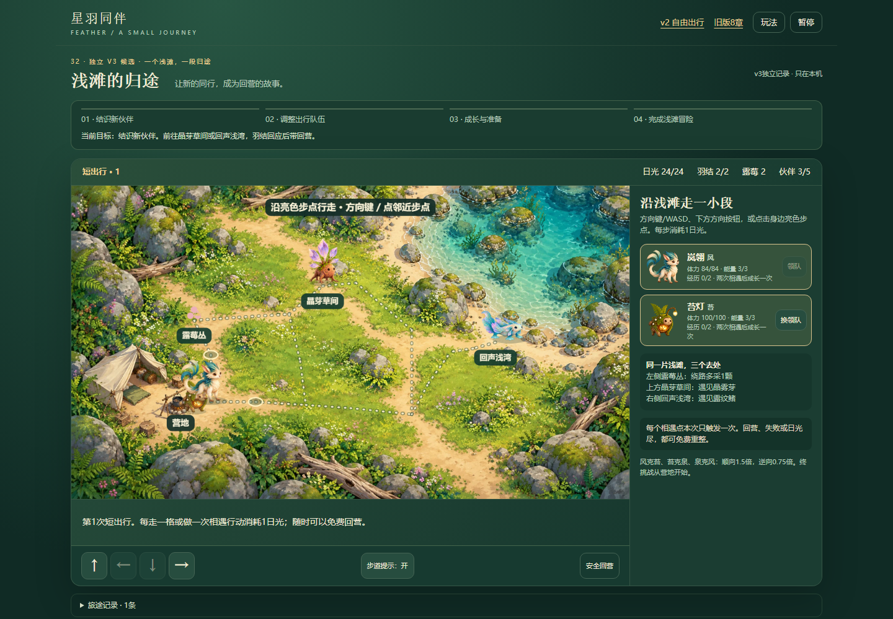
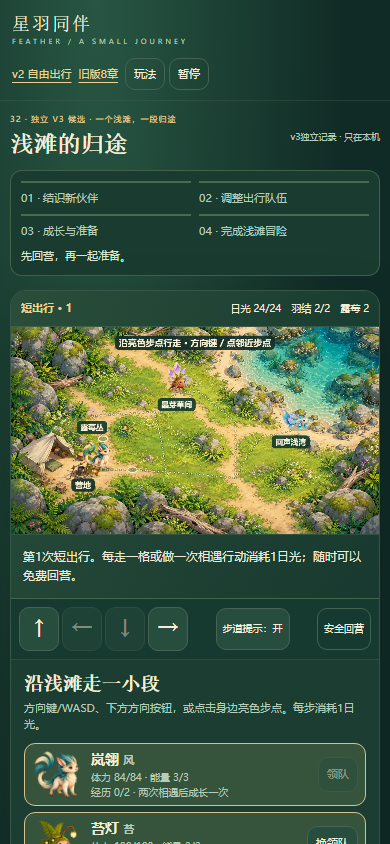
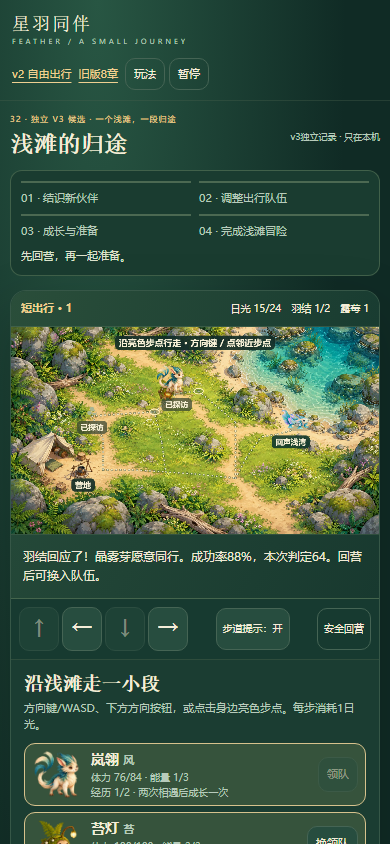
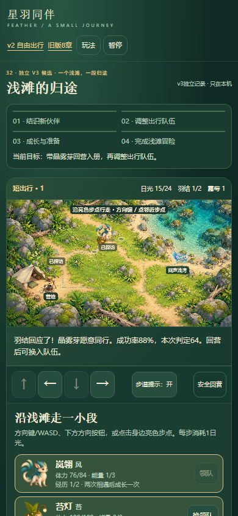
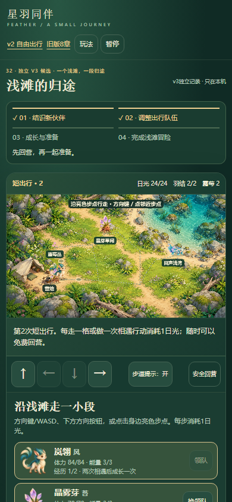
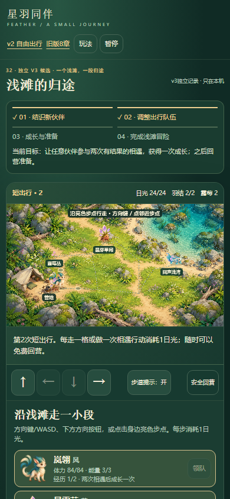

只改顶部目标显示：寻找伙伴 → 带回入册 → 换队与成长 → 回营挑战。原任务、路线、奖励、数值与存档保持。
试玩 · 完整范围与步骤 · 修改前普通UI · 本地双视口 · 30个状态精确一致 · 10组模型测试 · 剩余两条候选 · 保留的技能预览证据 · 覆盖索引
本地1440×1000与390×844各24个正常UI记录动作、15个观察点、3次刷新。已知路线脚本辅助与离线fixture分开。线上结果发布后单独交付；窄屏模拟不是真机或整体品质验收。





